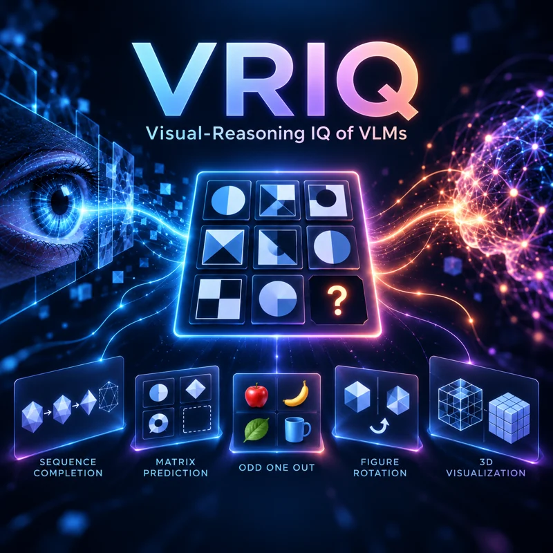
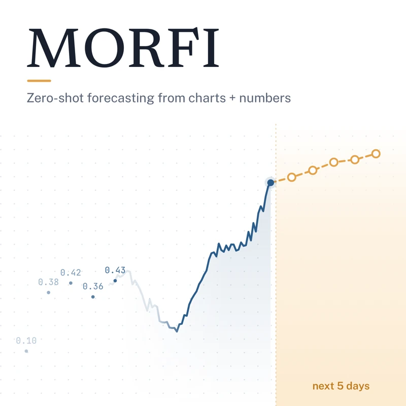

VRIQ: Benchmarking the Visual-Reasoning IQ of VLMs
arXiv 2026
1,391 human-verified IQ-style puzzles plus a diagnostic subset that separates perception errors from reasoning errors across 21 VLMs.
Papers with released code and data. Each card links to a project page with the abstract and citation.

arXiv 2026
1,391 human-verified IQ-style puzzles plus a diagnostic subset that separates perception errors from reasoning errors across 21 VLMs.
PETS 2025
A 20-month study of 24,530 queries showing how Google, Amazon, and Apple voice assistants profile their users.

ICCV 2025 Workshops
Training-free stock forecasting that prompts a VLM with price charts and numbers together, beating text-only LLMs by 40–80% in MSE.
CVPR 2025 Workshop
Zero-shot VLM forecasting from line charts and price history with chain-of-thought prompts, up to 89.8% better than baselines.